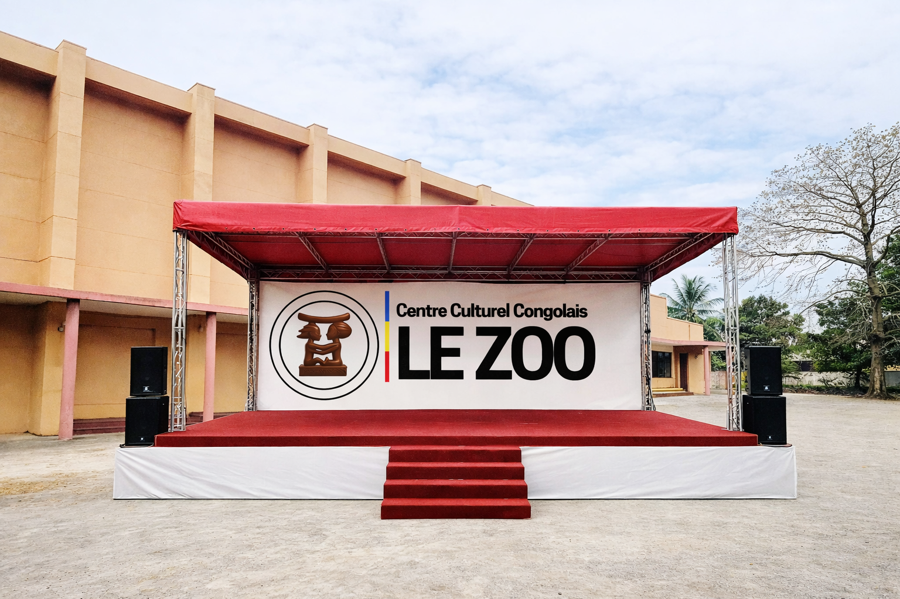
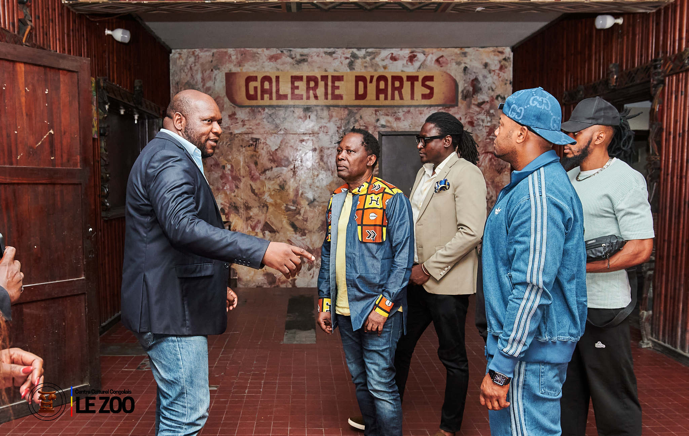

Bibliothèque CZOO
Un lieu de recherche, d’étude et de diffusion des arts visuels et de la mémoire culturelle.
Galerie
Un parcours visuel dans nos espaces, nos expositions, nos ateliers et la vie du Centre.
Des lieux dédiés à la création, à la diffusion et à l’accueil du public.
Un lieu de recherche, d’étude et de diffusion des arts visuels et de la mémoire culturelle.

Un écrin végétal pensé pour les performances en plein air, les rencontres et les installations.

Une scène multifonctionnelle pour concerts, théâtre et rendez-vous culturels de la saison.

Un espace central qui fédère les parcours artistiques et les présentations publiques.

Des espaces d’accrochage et de mise en scène dédiés aux artistes contemporains et traditionnels.

Le visage du CZOO, identifiable et inspirant, à l’entrée de la vie culturelle kinshasaise.
Espaces, œuvres et moments forts d’une institution culturelle active.
Bibliothèque, salles de spectacle, galeries et ateliers, pensés pour une expérience immersive.
Sélection d’expositions et d’installations qui racontent notre identité culturelle.
Rencontres, spectacles et événements qui font vivre notre centre au quotidien.
Moments forts capturés dans nos activités passées au Zoo.